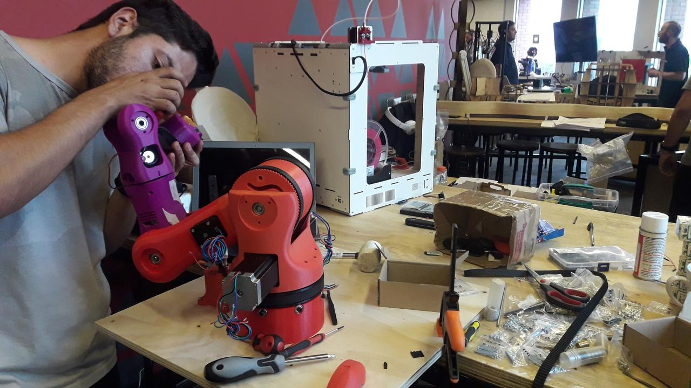

Adopción tecnológica
Implementación de tecnologías existentes en procesos productivos, de servicios o en la sociedad.
Creación
Generación de soluciones originales para necesidades institucionales o del entorno.
Mira un video de ejemplo aquíDesarrollo experimental
Creación o mejora de productos o procesos mediante conocimientos previos. (Frascati, 2015)
Innovación
Implementación de prácticas, productos o servicios nuevos o mejorados. (Oslo, 2018)
Investigación aplicada
Generación de conocimientos nuevos con un objetivo práctico. (Frascati, 2015)
Sostenibilidad
Responsabilidad en lo económico, social y ambiental para las futuras generaciones.
Vinculación con el Medio
Conexión permanente con el entorno para fortalecer el proceso formativo.
Difusión tecnológica
Divulgación de avances y buenas prácticas para fomentar la innovación.
Emprendimiento
Identificación de oportunidades para generar valor y apoyar empresas sostenibles.

Formación y capacidades
Desarrollo de competencias en innovación, emprendimiento y tecnologías.
I+D (Investigación y Desarrollo)
Mejora de prácticas o servicios mediante conocimiento nuevo o existente.
Generación de conocimiento
Análisis de información para innovar a nivel institucional y en el entorno.
Transferencia tecnológica
Entrega de tecnologías al entorno para fomentar su uso y aplicación.